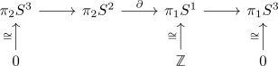
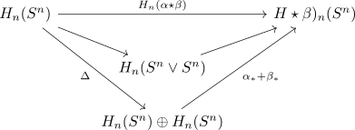

n-th homotopy group of an n-sphere
Proposition
Then the
\begin{align*}
\mathrm{deg}: \pi_n(S^n) \rightarrow \mathrm{Hom}(H_n(S^n), H_n(S^n))) \cong \mathbb{Z}
\end{align*}
is an isomorphism
Proof
homotopo group
Note that $\pi_n(S^n) \cong \mathbb{Z}$ follows from the freudenthal suspension theorem for a sphere Proof by induction
induction basis
$n = 1$
see: fundamental group of a circle
$n = 2$
Consider the long exact sequence of a serre fibration of the hopf map from S^3 as fibre bundle

where by surjection on homotopy groups between skeleton and CW complex we know that $S^3$ is \(2\)-connected space
induction step
for $n \geq 2$, the map
\begin{align*}
\pi_n S^n \rightarrow \pi_{n+1} S^{n+1}
\end{align*}
is an isomorphism by freudenthal suspension theorem for a sphere
homomorphism
use
\begin{align*}
\pi_n(S^n) = \pi_0\mathrm{Map}_*(S^n, S^n)
\end{align*}
Let $\alpha, \beta: (I^n, \partial I^n) \rightarrow (S^n, x)$ be arbitrary.
\begin{align*}
S^n \arrow[]{d}{} \arrow[]{r}{\alpha \star \beta} & S^n \\
S^n \vee S^n \arrow[]{ru}{}& \\
\end{align*}
Consider the factorization

alternative proof (possibly circular)
use absolute Hurewicz theorem and singular homology of a sphere